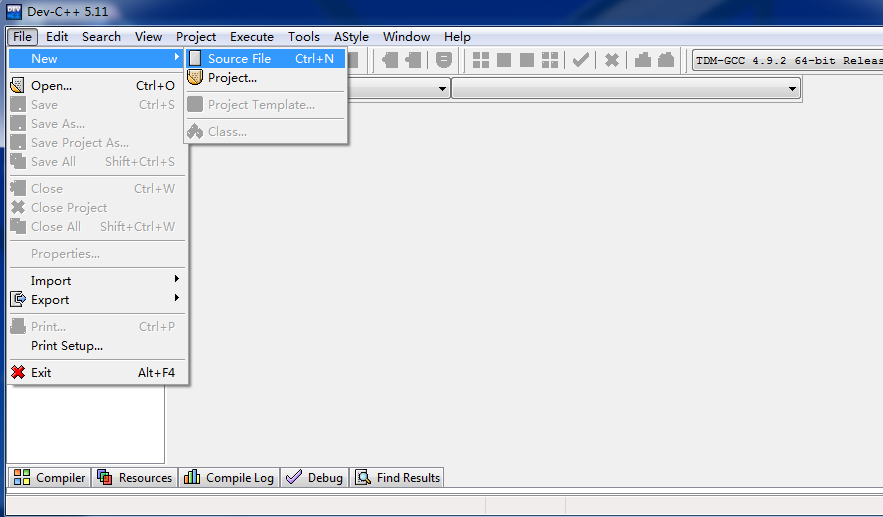
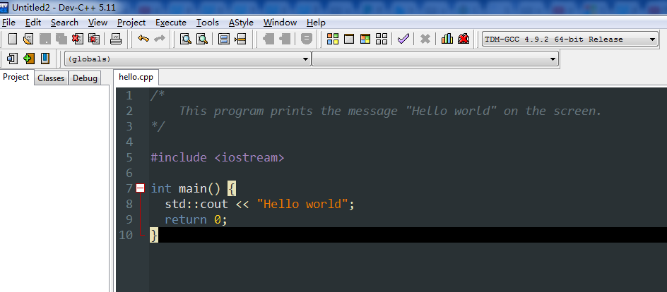
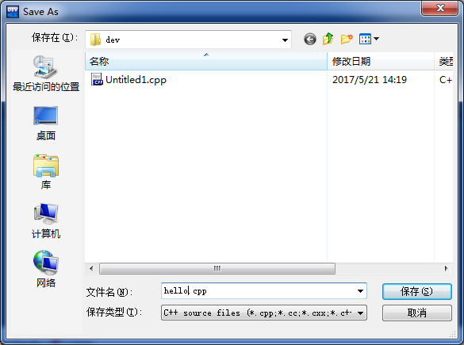
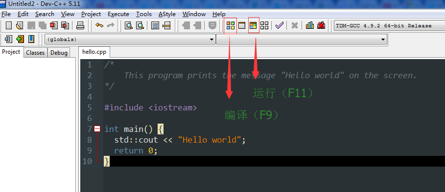
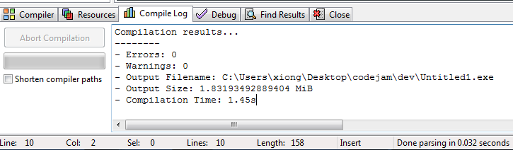
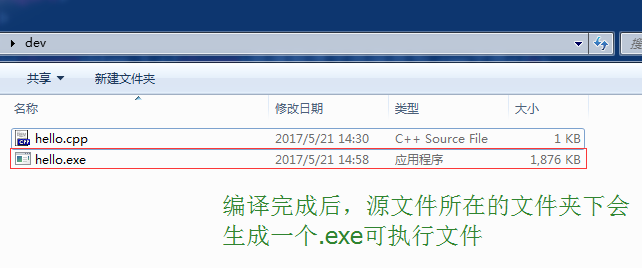
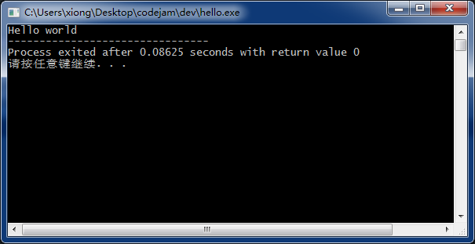

To dear Sherry
第 0 章
序
关于此系列文章
此系列文章主要面向没有编程经验的初学者，我们希望通过介绍如何使用C语言设计程序，使读者了解计算机的结构和运行原理，了解C语言的基本语法和一些程序设计的best practice，掌握使用分解和抽象解决问题的方法，为读者进一步学习计算机专业知识奠定基础。
此系列文章中包含的实验建议在安装Windows系统的计算机上完成。
此系列文章主要包含以下内容
- C 语言开发及运行环境的配置
- 变量和内存模型初探
- 判断、循环和结构化程序
- 函数和程序的模块化
- 数组和深入内存模型
- 数据结构及算法简介
- 函数递归和递归算法
- 头文件和工程化方法
计算机科学
Computer Science（计算机科学）的人总是被别的系的人挤兑，说你们为什么要叫计算机科学系呢，因为你们不科学，所以才要在名字上硬加上科学两个字，以显示你们是有逼格的，搞的是科学，是很高端的东西。
计算机和科学两个词搭配在一起是感觉怪怪的，计算机是人发明出来的机器，怎么就科学了呢，人家汽车也是人发明出来的机器，就没有人说汽车科学是吧，只有车辆工程或汽修技术。
人们用科学这个词，往往是关于研究自然界的现象，这些现象是即使没有人类也是客观存在的，比如生物、物理、天文，这些东西我们感觉很科学，计算机怎么就科学了呢？
让我们回顾一下历史，三千年前的埃及，尼罗河周期性的洪水带来的泥土在河谷形成肥沃的农田，他们根据土地的面积大小来决定交给法老多少税收，那时的埃及人掌握了丈量土地计算面积的方法，他们发明了几何。从三千年后的今天来看，他们发明几何最大的意义并不是掌握了测量土地面积的工具，而是找到了描述点、线、面关系的方法，从此开始人类便能够系统探索关于空间的知识。
计算机包含有形的硬件和无形的程序软件，程序是抽象的东西，它是一系列硬件能执行的操作指令，计算机科学便是关于怎样用这些抽象的东西，程序、软件描述问题解决问题的学科。
计算机他爹和冯诺依曼体系
冯诺依曼，计算机之父，他并没有发明电脑，也没有制造电脑。二战时期美军让宾夕法尼亚大学制造一台计算炮弹弹道的计算器，这台机器叫ENIAC，冯诺依曼当时在造原子弹，也需要算大量的数据，所以就去宾大把ENIAC找来用了一下，差不多在同一时期，美国还有另外一台电子计算器叫Mark I，冯诺依曼也去试用了一把。
用完以后冯老作了一个总结，他说，计算机应该这样造，它应该采用二进制，它应该包含运算器、控制器、存储器和输入输出设备五个组成部分，最重要的一点，它应该储存程序
储存程序，这一点在当时大概只有外星人能想到，我们现在会觉得在电脑上点两下网易云音乐就可以放音乐，点两下QQ就可以上网和人聊天是很自然的事。其实这是一件很逆天的事情，一台机器有A功能，没给他换任何零件，只是告诉了它一串0和1写成的天书，啪，它就有B功能了，老师傅都惊呆了。让Mark I算10+100再算10*100可是要拔一堆电线再新插一堆电线才能完成这个华丽的转身。

CPU
CPU 是计算机的大脑，它控制计算机的运行和完成计算功能。CPU的行为是由存储在计算机中的程序代码决定的。例如一个程序可以控制计算机进行两个数相加的运算。通过一些列简单的指令，计算机可以完成很复杂的任务。
现代的CPU集成在一块很小的电路上，我们称之为芯片，只有手指甲大小，里面含有上亿个可以完成简单数学计算（算加法）和逻辑计算（算与或非）的计算单元
Memory
计算机运行一个程序，首先需要有一个地方存储程序的指令代码，其次需要有一个地方存储运算的结果，这个地方就是主存储器，我们一般叫它内存。这是冯诺依曼1946年提出来的想法，现在我们的电脑还是这个样子。
Storage
最常用的Storage就是我们的硬盘，我们的程序、软件、游戏、小电影都存在硬盘里面。硬盘和内存都是存储设备，它们有什么不同呢？关了电脑内存里面存的东西就没了，但是硬盘断了电资料是不会丢失的。我们的电脑开机时它内部做的一件事是检查硬件是否正常，第二件事就是从硬盘上把操作系统程序拷贝到内存中运行执行，系统就起来了。在使用电脑的过程中，例如Office办公软件，你不使用这个软件的时候，它是存储在硬盘中的，你双击启动它，计算机才会把Office的程序从硬盘拷贝到内存中，然后CPU再一条一条执行内存中的Office软件指令。
I/O 设备
Input/Output deices，输入输出设备，最常用的输入设备就是键盘鼠标喽，不用多解释了。输出设备，最常用的有显示器、投影仪、打印机等。
算法
前面我们讨论了计算机的硬件和结构方面的知识，下面我们讲一讲计算机科学，如何用计算机解决问题。算法，我们可以简单理解为解决问题的方法，比如我们在上小学的时候都学过的列竖式算乘法，就是一个算法。为了更好的理解算法，我们来尝试一下给算法下个定义。算法要能解决问题，它应当要能够被准确的表达，没有歧义，让人们能够理解它的每一个步骤；其次，一个算法应当是有效的，里面每一个步骤都能被执行；最后，一个算法应当是有限的，在一定的步骤后它能停下来得到结果。
总结一下，一个算法应当满足以下三个要求：
- Clearly and unambiguously defined
- Effective, in the sense that its steps are excutable.
- Finite, in the sense that it terminates after a bounded number of steps.
程序语言和编译
用计算机解决问题包含两个步骤，首先我们需要设计出解决这个问题的算法，这个过程我们称之为算法设计（algorithmic design）；然后我们还要把这个算法用计算机能够理解运行的程序语言写出来，这个过程称之为编码（coding）。
程序语言有很多，列如C、Python、Javascript等等，在这个系列文章中我们主要讨论C程序语言。C语言是一种高级程序语言，为什么叫高级程序语言呢？因为它可以在各种计算机上运行，比如苹果Mac、IBM PC、iPad、安卓手机等等，其实这些不同的计算机用的CPU不同，各自有各自的机器语言，机器语言是低级语言，安卓手机的机器语言在ipad上是运行不了的。为什么C语言可以在各种机器上运行呢？因为C语言代码在变成最终的可执行代码的过程中经历了一个编译的过程。编译的过程很复杂，通俗的解释，我们用C语言写的代码通常放在一个.c的文件中，让后我们使用编译器把编写好的.c文件转化成.exe的文件，这个.exe的文件就是机器可执行的文件。
配置C语言开发运行环境
市面上有众多支持C语言的编译器和集成开发软件（IDE），为方便初学者学习，我们选用轻量级的Dev C++
首先，我们需要准备一台安装好windows操作系统的电脑。
Step 1. 下载Dev C++ Dev-Cpp 5.11 TDM-GCC 4.9.2
Step 2. 双击下载好的安装程序按如下设置安装Dev C++软件
Step 3. 启动Dev C++ 验证是否安装成功。
Hello World!
下面我们通过一个非常简单的hello world程序介绍Dev C++的使用。
整个实验包含以下 5 个步骤：
新建文件 -> 编写C语言源程序 -> 保存源程序为.cpp文件 -> 编译 -> 运行
-
Step 1.新建文件
 Dev C++新建文件 -
Step 2.编写C语言源程序（可复制粘贴以下代码）
/* This program prints the message "Hello world" on the screen. */ #include <iostream> int main() { std::cout << "Hello world"; return 0; } Hello world 源程序 -
Step 3.将源程序文件保存为.cpp文件
 保存源程序文件 -
Step 4.点击编译按钮或按快捷键 F9 编译源程序
编译过程需要几秒钟的时间，如果源程序没有问题，Dev C++会出现下图所示的输出信息。
完成编译后，源文件所在文件夹下会生成一个.exe可执行文件
如果Dev C++的输出信息提示源程序有错误，请仔细对照检查源程序。
 编译按钮和运行按钮  Dev C++完成编译  生成exe文件 -
Step 5.点击运行按钮或按快捷键 F11 运行程序
You did it, Congratulations !!!
 Hello world
C程序的结构
上面我们已经编写了我们的第一个C语言程序Hello World，并且在Dev C++中编译运行了该程序。这个程序的功能很简单，就是在屏幕上输出一行字“Hello world”。几乎每一本C语言的书都会以这个程序作为第一个示例程序，这是C语言界的一个传统，这个程序是C语言的发明者Brian Kernighan和Denis Ritchie在它们的著作《The C Programming Language》里展示的第一个示例程序，所以几乎所有后来编写的C语言的书籍都会使用这个示例程序向这两位发明者表示敬意。
把Hello world这个程序做为第一个示例程序还有另外几个很实际的原因，这个程序很短小，但所谓麻雀虽小五脏俱全，通过这个程序，读者可以弄清楚程序编码、编译、运行整个流程，读者在这个过程可以熟悉自己的计算机软件环境。通过这个程序，读者可以了解一个C程序的大致组成部分和结构。
下面让我们再来回顾一下Hello world这个程序，我们先来观察一下整个程序的结构。
整个Hello world 程序包含三个部分。
第一个部分是程序注释，C语言中/*和*/之间的内容为注释（Comment），注释部分在程序中是没有功能的，它不是给机器看的而是给人阅读的，注释可以方便别人理解你写的程序，也方便自己以后理解现在的程序。写好注释是造福别人也是造福自己，当你编写复杂的代码时，你要相信很可能过几天以后你自己也很难读懂你现在的代码，写好注释吧。
第二部分#include <iostream>是引入了一个名为iostream（Input Output Stream）的头文件，这个头文件是C语言中与输入输出相关的库，引入了这个头文件，我们便可以在程序中使用这个库里定义好的东西，例如main函数中用到了std::cout
第三部分有4行代码，这段代码定义了一个名为main的函数，这个函数的返回值类型是int(integer 整数)，main后面有一对小括号()，括号里面表示的是这个函数接受的参数，这对括号里面没有东西，是空的，表示这个main函数不需要接受参数。
小括号后面跟了一对花括号{}，花括号中间包含了两行代码，第一行代码std::cout << "Hello world";这句代码的作用就是把Hello world输出到电脑屏幕上
后面一行代码return 0;表示函数执行到此处返回一个整数0，函数运行结束。
实验题
-
把代码中的main换成其他的名字，观察是否能编译是否能运行？
在Dev C++中不能通过编译。main函数是c语言程序的入口，c语言程序运行时会从main函数开始执行，main在一个 完整 的程序中有且只有一个。
-
把代码中的空白字符(空格、换行、tab)删掉，观察是否能编译是否能运行？哪些字符上去后程序还可以正常编译运行？
-
把代码
std::cout << "Hello world";一行删去，观察程序编译运行的结果如何？ -
把
"Hello world"的双引号删掉，看代码能否编译运行？不能通过编译，"Hello world"这个整体表示一个字符串常量
知识回顾
计算机之父是谁，他设计建造了哪台计算机？他为什么被公认为计算机之父？
内存和硬盘有什么不同？
算法是什么？算法有什么特点？
为什么人们把C语言称之为高级语言？
C语言程序源代码可以执行吗？
C语言程序源代码怎样才能变成可以执行的程序？
Dev C++编译的快捷键是哪个？
Dev C++运行的快捷键是哪个？